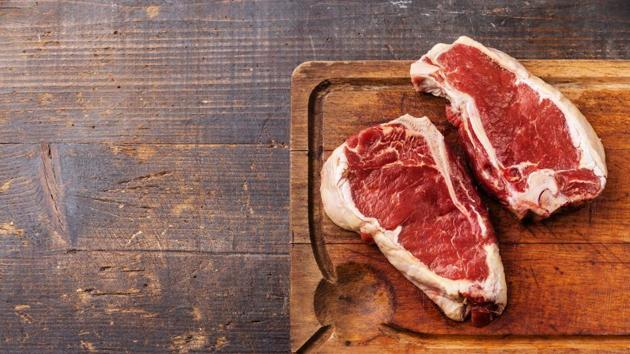

NUTRITION FOOD DETAILS
DETAILS
HOME
WEIGHT GAIN
WEIGHT LOSE
ABOUT US

MEAT
Red meat is a solid muscle building food.
Along with that they are also excellent natural sources of dietary creatine.
Red meat contains leucine, which is an amino acid that helps in stimulating muscle protein synthesis.